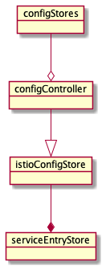
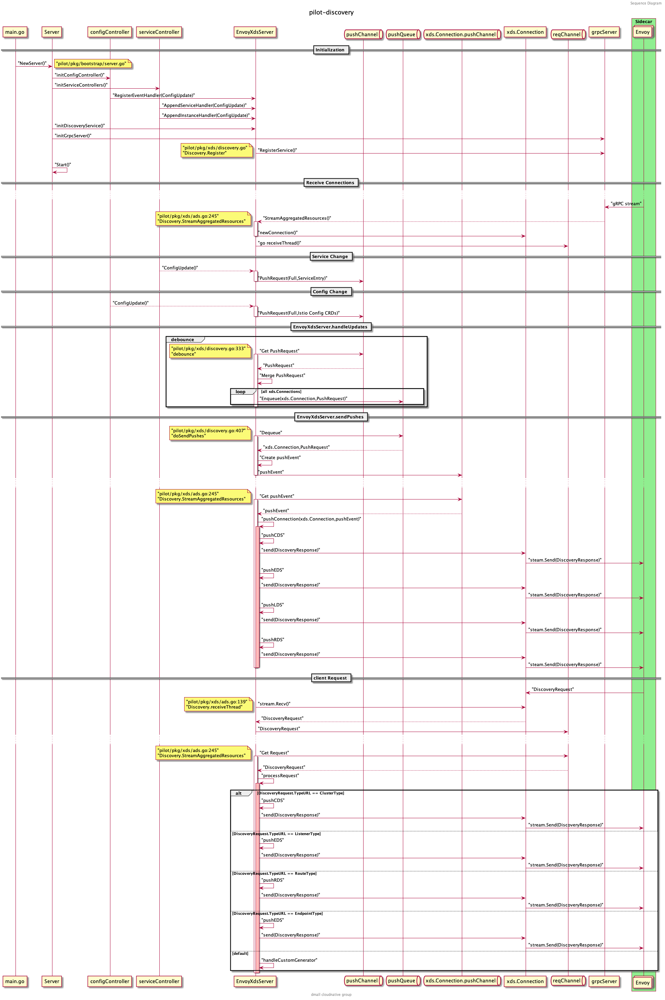
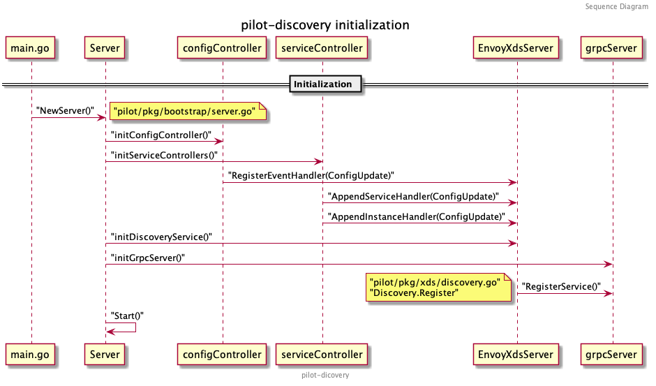

Istio 作为目前 Service Mesh 方案中的翘楚，吸引着越来越多的企业及开发者。越来越多的团队想将其应用于微服务的治理，但在实际落地时却因为不了解 Istio 黑盒中的运行机制而左右为难，本文将基于 1.7 的源码讲解 Istio 的核心组件 Pilot 的结构及运行流程，希望对读者应用 Istio 有所助益。
注：本文基于 istio release-1.7 分支分析，其他版本的代码结构会有所不同。
背景
随着 Istio 1.7 的发布，内部组件精简后的 istiod 日趋稳定，越来越多的公司将其应用到自身微服务的流量治理、安全通信及监测中。多点也不例外，应用 Istio 来落地业务系统所有 Dubbo 服务的网格化，下沉 SDK 逻辑，解决基础中间件与业务系统过于耦合等痛点。 目前，我们是通过自己开发的 Controller 组件对接 Zookeeper 等注册中心，将注册到 Zookeeper 的节点实时转化为 ServiceEntry 及 WorkloadEntry 等 Istio 配置类型写入 kube-apiserver，再由 Pilot 转化为 xDS 协议下发至数据面，同时对集群、虚拟机中的服务进行治理。随着公司服务网格化的逐步落地，对 Istio 及数据面组件源码级掌握的诉求越来越高，没有足够的深度及广度很难解决开发过程中遇到的难题，让我们一起揭开 Istio 神秘的面纱，看看黑箱内部是如何运作的。
本文作为 Istio 控制面组件 Pilot 的源码分析系列，主要面向刚接触 Istio 或仅停留在使用 Istio 基本配置类型（如 VirtualService、DestinationRule 等）的同学，需要熟悉 Istio 的一些 基础概念及名词 。文章会涉及较多的代码细节，我们会以不同的篇幅分别介绍以下内容：
pilot-discovery宏观架构及启动流程梳理pilot-discovery接口设计及关键接口分析pilot-discovery xDS生成及下发流程梳理pilot-agent流程梳理pilot中的身份认证及安全通信解析
相信通过源码一步一步分析，能消除读者对 Pilot 的陌生感，在基于 Pilot 做适配开发时会更加清楚的了解其底层运行逻辑，碰到问题时也能更好的定位。
Pilot 的代码主要分为两部分:
pilot-discoverypilot-agent
其中 pilot-agent 负责数据面 Sidecar 实例的生命周期管理，而 pilot-discovery 负责控制面流量管理配置及路由规则的生成和下发。
宏观架构
pilot-discovery 的核心组件如图：

其中 Server 为 pilot-discovery 的主服务，包含了三个比较重要的组件：
Config Controller：从不同来源接收流量控制和路由规则等Istio的配置，并响应各类事件。Service Controller：从不同注册中心同步服务及实例，并响应各类事件。EnvoyXdsServer：核心的xDS协议推送服务，根据上面组件的数据生成xDS协议并下发。
Config Controller 比较核心的就是对接 Kubernetes，从 kube-apiserver 中 Watch 集群中的 VirtualService、ServiceEntry、DestinationRules 等配置信息，有变化则生成 PushRequest 推送至 EnvoyXdsServer 中的推送队列。除此之外，还支持对接 MCP(Mesh Configuration Protocol) 协议的 gRPC Server，如 Nacos 的 MCP 服务等，只需要在 meshconfig 中配置 configSources 即可。最后一种是基于内存的 Config Controller 实现，通过 Watch 一个文件目录，加载目录中的 yaml 文件生成配置数据，主要用来测试。
Service Controller 目前原生支持 Kubernetes 和 Consul，注册在这些注册中心中的服务可以无痛接入 Mesh，另外一种比较特殊，就是 ServiceEntryStore，它本质是储存在 Config Controller 中的 Istio 配置数据，但它描述的却是集群外部的服务信息，详情可阅读文档 ServiceEntry，Istio 通过它将集群外部，如部署在虚拟机中的服务、非 Kubernetes 的原生服务同步到 Istio 中，纳入网格统一进行流量控制和路由，所以 ServiceEntryStore 也可以视为一种注册中心。还有一种就是 Mock Service Registry，主要用来测试。
ServiceEntryStore 从 Config Controller 到 Service Controller 的转化流程大致如图（后续会做详细的代码分析，这里简单了解一下即可）：

ConfigStores 是一个列表，里面存储了各类 Istio 配置文件，包括 ServiceEntry 、WorkloadEntry 等服务数据，也包括 VirtualService、DestinationRules、Sidecar 等流量控制、路由规则的配置数据，pilot-discovery 将这些 ConfigStores 聚合成一个 configController 统一进行管理，之后再从其中衍生出 IstioConfigStore，将其作为 serviceEntryStore 的配置源。serviceEntryStore 其实就是 ServiceEntry Controller，响应 ServiceEntry 和 WorkloadEntry 这类服务信息的变化。
EnvoyXdsServer 比较核心，一切与 xDS 协议相关的接收、转换、下发操作都由它完成。EnvoyXdsServer 对接所有集群中的边车代理，如 Envoy、MOSN 等，当配置或服务发生变化时主动推送，也会响应代理发送的请求，依据请求的信息下发相应的 xDS 配置。
理解了这三个核心组件的定义，就能比较好的理解下面分析的各类流程了。
pilot-discovery 的整个业务流程梳理如下，可以先大概浏览一遍，之后我们逐一进行分析:

启动流程梳理
首先详细看一下 pilot-discovery 的启动流程。pilot-discovery 组件的入口代码在 istio/pilot/cmd/pilot-discovery 中。该目录中包含两个文件: main.go 和 request.go。main.go 中定义了 pilot-discovery 根命令及 discovery 命令，是启动服务发现及配置下发的主流程; 另一个文件 request.go 中定义了 request 命令，用来请求 Pilot 中的 metrics/debug 接口，多用来调试。
main.go 中 discoveryCmd的 RunE 函数定义了启动过程，代码如下：
// 创建一个接收空结构的 stop channel 用来停止所有 servers
stop := make(chan struct{})
// 创建服务发现的 Server
discoveryServer, err := bootstrap.NewServer(serverArgs)
if err != nil {
return fmt.Errorf("failed to create discovery service: %v", err)
}
// 运行 Server 中注册的所有服务
if err := discoveryServer.Start(stop); err != nil {
return fmt.Errorf("failed to start discovery service: %v", err)
}
// 等待 SIGINT 和 SIGTERM 信号并关闭 stop channel
cmd.WaitSignal(stop)
启动流程如图所示： 
初始化流程
接下来介绍 discoveryServer ，即 pilot-discovery 组件的核心。在这之前先看下 Server 的结构，代码位于 istio/pilot/pkg/bootstrap/server.go 文件中。
Server 的关键字段如下：
type Server struct {
XDSServer *xds.DiscoveryServer // Xds 服务
environment *model.Environment // Pilot 环境所需的 API 集合
kubeRegistry *kubecontroller.Controller // 处理 Kubernetes 主集群的注册中心
multicluster *kubecontroller.Multicluster // 处理 Kubernetes 多个集群的注册中心
configController model.ConfigStoreCache // 统一处理配置数据（如 VirtualService 等) 的 Controller
ConfigStores []model.ConfigStoreCache // 不同配置信息的缓存器，提供 Get、List、Create 等方法
serviceEntryStore *serviceentry.ServiceEntryStore // 单独处理 ServiceEntry 的 Controller
fileWatcher filewatcher.FileWatcher // 文件监听器，主要 watch meshconfig 和 networks 配置文件等
startFuncs []startFunc // 保存了上述所有服务的启动函数，便于在 Start() 方法中批量启动及管理
}
再看 NewServer() 方法中的内容，有以下几个关键步骤：

我们对每个步骤逐一进行分析:
-
初始化
Environment什么是
Environment呢？根据定义Environment为Pilot提供了一个汇总的、运行中所需的 API 集合。Environment中字段（接口）如下：type Environment struct { ServiceDiscovery // 服务发现的接口模型，主要列出 services 和 instances IstioConfigStore // Istio 配置文件的存储器，主要列出 ServiceEntry 等配置 mesh.Watcher // mesh config 文件的监听器 mesh.NetworksWatcher // mesh network config 文件的监听器 PushContext *PushContext // 在推送（下发 xDS）生成期间保存信息的上下文 DomainSuffix string // istio server 默认的后缀域名 }其中
PushContext是Pilot在推送xDS前，生成配置期间保存相关信息的上下文的地方，在全量推送配置和配置发生改变时重置。它会保存所有的错误和统计信息，并缓存一些配置的计算信息。ServiceDiscovery提供了枚举Istio中服务和实例的方法。mesh.Watcher和mesh.NetworksWatcher负责监听istiod启动时挂载的两个配置文件，这两个配置文件是通过configmap映射到Pod的文件系统中的，监听器将在监听到配置文件变化时运行预先注册的Handler。文件挂载参考istiod的配置文件：apiVersion: v1 kind: Pod metadata: name: istiod-56c488887d-z9k5c namespace: istio-system spec: containers: volumeMounts: - mountPath: /etc/istio/config name: config-volume volumes: - configMap: defaultMode: 420 name: istio name: config-volume相应的配置存储在
istio-system/istio这个configmap中，里面保存了mesh和meshNetworks两种配置，样例如下:apiVersion: v1 kind: ConfigMap metadata: name: istio namespace: istio-system data: mesh: |- accessLogEncoding: TEXT accessLogFile: "" accessLogFormat: "" defaultConfig: binaryPath: /usr/local/bin/mosn concurrency: 2 configPath: ./etc/istio/proxy ... meshNetworks: 'networks: {}'再回头看
Environment的初始化：e := &model.Environment{ PushContext: model.NewPushContext(), DomainSuffix: args.RegistryOptions.KubeOptions.DomainSuffix, } ac := aggregate.NewController(aggregate.Options{ MeshHolder: e, }) e.ServiceDiscovery = ac首先是初始化了一份
PushContext，创建PushContext所需的各种列表和Map。 其次是初始化了一个聚合所有注册中心的Controller作为Environment中的ServiceDiscovery。 该Controller提供从所有注册中心（如Kubernetes, Consul, MCP等）获取服务和实例列表的方法。 这里传入了一个参数MeshHolder是想利用Environment中的mesh.Watcher将mesh这个配置同步过去。 -
初始化
ServerServer的结构之前分析过，这里将之前初始化的Environment传入后，开始初始化XDSServer。s := &Server{ clusterID: getClusterID(args), environment: e, XDSServer: xds.NewDiscoveryServer(e, args.Plugins), // 初始化 XDSServer fileWatcher: filewatcher.NewWatcher(), httpMux: http.NewServeMux(), monitoringMux: http.NewServeMux(), readinessProbes: make(map[string]readinessProbe), }XDSServer相关的代码在istio/pilot/pkg/xds/discovery.go中，对应为DiscoveryServer，该服务为Envoy xDS APIs的gRPC实现。DiscoveryServer关键定义如下：type DiscoveryServer struct { Env *model.Environment // 即上述 pilot server 中的 Environment ConfigGenerator core.ConfigGenerator // 控制面 Istio 配置的生成器，如 VirtualService 等 Generators map[string]model.XdsResourceGenerator // 针对不同配置类型的定制化生成器 concurrentPushLimit chan struct{} // 不同服务所有实例的集合，增量更新，key 为 service 和 namespace // EndpointShards 中是以不同的注册中心名为 key 分组保存实例 EndpointShardsByService map[string]map[string]*EndpointShards pushChannel chan *model.PushRequest // 接收 push 请求的 channel pushQueue *PushQueue // 防抖之后，真正 Push xDS 之前所用的缓冲队列 adsClients map[string]*Connection // ADS 和 EDS 的 gRPC 连接 StatusReporter DistributionStatusCache // 监听 xDS ACK 和连接断开 // xDS 状态更新的生成器（更新 connect, disconnect, nacks, acks） // 状态更新后向所有 connection 推送 DiscoveryResponse InternalGen *InternalGen serverReady bool // 表示缓存已同步，server 可以接受请求 debounceOptions debounceOptions // 防抖设置 cache Cache // xDS 资源的缓存，目前仅适用于 EDS，线程安全 } -
初始化
MeshConfig、KubeClient、MeshNetworks和MeshHandlerss.initMeshConfiguration(args, s.fileWatcher) if err := s.initKubeClient(args); err != nil { return nil, fmt.Errorf("error initializing kube client: %v", err) } s.initMeshNetworks(args, s.fileWatcher) s.initMeshHandlers()这几个初始化函数比较好理解，
initMeshConfiguration和initMeshNetworks都是通过fileWatcher对istiod从configmap中挂载的两个配置文件mesh和meshNetworks进行监听。当配置文件发生变化时重载配置并触发相应的Handlers。filewatcher的代码在另一个管理通用工具包的项目里：github.com/istio/pkg/filewatcher，感兴趣的同学可以再详细研究下，底层使用到了 fsnotify 这个库来推送文件变化事件。initMeshHandlers为上述两个配置文件注册了两个Handler，当配置文件发生变化时触发全量xDS下发。 -
初始化
Controllers这部分比较核心，初始化了三种控制器分别处理证书、配置信息和注册信息，证书及安全相关的内容本篇先暂不讨论。主要来看
initConfigController和initServiceControllers。func (s *Server) initControllers(args *PilotArgs) error { log.Info("initializing controllers") if err := s.initCertController(args); err != nil { return fmt.Errorf("error initializing certificate controller: %v", err) } if err := s.initConfigController(args); err != nil { return fmt.Errorf("error initializing config controller: %v", err) } if err := s.initServiceControllers(args); err != nil { return fmt.Errorf("error initializing service controllers: %v", err) } return nil }配置信息大都是
Istio定义的一系列CRD（如VirtualService、DestinationRules等），一个控制面可以通过MCP同时接入多个Kubernetes之外的配置数据源，也可通过文件目录（主要用来调试）挂载，默认是读取 Kubernetes 中的配置数据：func (s *Server) initK8SConfigStore(args *PilotArgs) error { configController, err := s.makeKubeConfigController(args) ... s.initStatusController(args, features.EnableStatus) // 初始化上面提到的 StatusReporter return nil }配置数据包括以下类型，具体每个类型的含义
Istio官网都有介绍及用例，这里不再赘述：// PilotServiceApi contains only collections used by Pilot, including experimental Service Api. PilotServiceApi = collection.NewSchemasBuilder(). MustAdd(IstioNetworkingV1Alpha3Destinationrules). MustAdd(IstioNetworkingV1Alpha3Envoyfilters). MustAdd(IstioNetworkingV1Alpha3Gateways). MustAdd(IstioNetworkingV1Alpha3Serviceentries). MustAdd(IstioNetworkingV1Alpha3Sidecars). MustAdd(IstioNetworkingV1Alpha3Virtualservices). MustAdd(IstioNetworkingV1Alpha3Workloadentries). MustAdd(IstioNetworkingV1Alpha3Workloadgroups). MustAdd(IstioSecurityV1Beta1Authorizationpolicies). MustAdd(IstioSecurityV1Beta1Peerauthentications). MustAdd(IstioSecurityV1Beta1Requestauthentications). MustAdd(K8SServiceApisV1Alpha1Gatewayclasses). MustAdd(K8SServiceApisV1Alpha1Gateways). MustAdd(K8SServiceApisV1Alpha1Httproutes). MustAdd(K8SServiceApisV1Alpha1Tcproutes). Build()详细看下
initK8SConfigStore中的makeKubeConfigController方法，这里初始化了一个处理Istio CRDs的Client，实现ConfigStoreCache这个接口中增删改查等方法。func (s *Server) makeKubeConfigController(args *PilotArgs) (model.ConfigStoreCache, error) { c, err := crdclient.New(s.kubeClient, buildLedger(args.RegistryOptions), args.Revision, args.RegistryOptions.KubeOptions) if err != nil { return nil, err } return c, nil }Client定义如下：type Client struct { schemas collection.Schemas // Istio CRDs shemas domainSuffix string configLedger ledger.Ledger revision string kinds map[resource.GroupVersionKind]*cacheHandler // 跟踪已知类型的所有缓存 handler queue queue.Instance istioClient istioclient.Interface serviceApisClient serviceapisclient.Interface }再依次对这些类型创建
Informer开启监听。回到initConfigController，创建好ConfigStore之后，再对其进一步包装：// 将所有 ConfigStore 聚合并缓存 aggregateConfigController, err := configaggregate.MakeCache(s.ConfigStores) // 通过 s.configController 统一操作上面聚合的 ConfigStores s.configController = aggregateConfigController // 将其包装为 IstioConfigStore 传入 environment，便于操作 ServiceEntry/Gateway 等资源 // IstioConfigStore 会在之后的 ServiceEntryStore 中用到 s.environment.IstioConfigStore = model.MakeIstioStore(s.configController)最后将该
Controller的启动函数注册到startFuncs中：s.addStartFunc(func(stop <-chan struct{}) error { go s.configController.Run(stop) return nil })再来看
initServiceControllers处理服务发现的Controller初始化:func (s *Server) initServiceControllers(args *PilotArgs) error { serviceControllers := s.ServiceController() for _, r := range args.RegistryOptions.Registries { // ... switch serviceRegistry { case serviceregistry.Kubernetes: if err := s.initKubeRegistry(serviceControllers, args); err != nil { return err } // ... } // ... }从之前初始化的
environment.ServiceDiscovery中获取已注册的服务中心，如果是Kubernetes则执行initKubeRegistry:// initKubeRegistry creates all the k8s service controllers under this pilot func (s *Server) initKubeRegistry(serviceControllers *aggregate.Controller, args *PilotArgs) (err error) { // ... log.Infof("Initializing Kubernetes service registry %q", args.RegistryOptions.KubeOptions.ClusterID) kubeRegistry := kubecontroller.NewController(s.kubeClient, args.RegistryOptions.KubeOptions) s.kubeRegistry = kubeRegistry serviceControllers.AddRegistry(kubeRegistry) return }进一步初始化
Kubernetes注册中心，方法为NewController，先看一下这个Controller的结构：type Controller struct { client kubernetes.Interface queue queue.Instance serviceInformer cache.SharedIndexInformer serviceLister listerv1.ServiceLister endpoints kubeEndpointsController nodeInformer cache.SharedIndexInformer nodeLister listerv1.NodeLister pods *PodCache metrics model.Metrics networksWatcher mesh.NetworksWatcher xdsUpdater model.XDSUpdater domainSuffix string clusterID string serviceHandlers []func(*model.Service, model.Event) instanceHandlers []func(*model.ServiceInstance, model.Event) workloadHandlers []func(*model.WorkloadInstance, model.Event) sync.RWMutex servicesMap map[host.Name]*model.Service nodeSelectorsForServices map[host.Name]labels.Instance nodeInfoMap map[string]kubernetesNode externalNameSvcInstanceMap map[host.Name][]*model.ServiceInstance workloadInstancesByIP map[string]*model.WorkloadInstance ranger cidranger.Ranger networkForRegistry string once sync.Once }可以看到
Controller对Services、Nodes、Pods等资源各自初始化了Informer、 Lister 以及对应的 Map，各类 Handlers 在 Informer 监听到增删改查时推送相应的事件到 queue ，再由onServiceEvent、onNodeEvent、c.pods.onEvent中更新对应的 Map 。回到
initServiceControllers，初始化完 Kubernetes 注册中心之后，还需要关注 Kubernetes 集群之外的服务，这些服务基本都是通过ServiceEntry注册到控制面的，所有ServiceEntry配置数据目前还都在之前初始化的configController配置中心控制器中，这里将ServiceEntry数据单独拎出来初始化一个ServicEntry注册中心，加入到serviceControllers中：s.serviceEntryStore = serviceentry.NewServiceDiscovery( s.configController, s.environment.IstioConfigStore, s.XDSServer) serviceControllers.AddRegistry(s.serviceEntryStore)serviceEntryStore相关的逻辑会在后续 xDS 下发流程的分析中再阐述。最后将
serviceControllers中所有的服务注册中心的Controller的启动函数都注册到startFuncs中:s.addStartFunc(func(stop <-chan struct{}) error { go serviceControllers.Run(stop) return nil })// Run starts all the controllers func (c *Controller) Run(stop <-chan struct{}) { for _, r := range c.GetRegistries() { go r.Run(stop) } <-stop log.Info("Registry Aggregator terminated") } -
初始化
RegistryEventHandlersinitRegistryEventHandlers设置了三个事件处理器serviceHandler、instanceHandler和configHandler分别响应服务、实例和配置数据的更新事件。serviceHandler如下：serviceHandler := func(svc *model.Service, _ model.Event) { pushReq := &model.PushRequest{ Full: true, ConfigsUpdated: map[model.ConfigKey]struct{}{{ Kind: gvk.ServiceEntry, Name: string(svc.Hostname), Namespace: svc.Attributes.Namespace, }: {}}, Reason: []model.TriggerReason{model.ServiceUpdate}, } s.XDSServer.ConfigUpdate(pushReq) } if err := s.ServiceController().AppendServiceHandler(serviceHandler); err != nil { return fmt.Errorf("append service handler failed: %v", err) }可以看到当服务本身发生变化时，会触发
xDS的全量下发，所有与该服务相关的代理都会收到推送。实例的变动也会触发
xDS的全量下发，不过仅在连接Consul时生效。Kubernetes和MCP这两种服务发现的场景下，更新事件的Handler是在别的地方注册的。instanceHandler := func(si *model.ServiceInstance, _ model.Event) { // TODO: This is an incomplete code. This code path is called for consul, etc. // In all cases, this is simply an instance update and not a config update. So, we need to update // EDS in all proxies, and do a full config push for the instance that just changed (add/update only). s.EnvoyXdsServer.ConfigUpdate(&model.PushRequest{ Full: true, ConfigsUpdated: map[model.ConfigKey]struct{}{{ Kind: gvk.ServiceEntry, Name: string(si.Service.Hostname), Namespace: si.Service.Attributes.Namespace, }: {}}, Reason: []model.TriggerReason{model.ServiceUpdate}, }) } // 跳过 Kubernetes 和 MCP for _, registry := range s.ServiceController().GetRegistries() { // Skip kubernetes and external registries as they are handled separately if registry.Provider() == serviceregistry.Kubernetes || registry.Provider() == serviceregistry.External { continue } if err := registry.AppendInstanceHandler(instanceHandler); err != nil { return fmt.Errorf("append instance handler to registry %s failed: %v", registry.Provider(), err) } }上一步初始化了
configController，它操作的对象主要是像VirtualService、DestinationRules这些Istio定义的配置，这些配置的变化也会触发xDS的全量下发，所有与该配置相关的代理都会收到推送。不过ServiceEntry和WorkloadEntry除外，这两个资源的配置下发是由ServiceEntryStore管理的，之前在初始化ServiceController时定义的s.serviceEntryStore会处理，之后的篇幅再做详细介绍。configHandler := func(_, curr model.Config, event model.Event) { pushReq := &model.PushRequest{ Full: true, ConfigsUpdated: map[model.ConfigKey]struct{}{{ Kind: curr.GroupVersionKind, Name: curr.Name, Namespace: curr.Namespace, }: {}}, Reason: []model.TriggerReason{model.ConfigUpdate}, } s.EnvoyXdsServer.ConfigUpdate(pushReq) }下面是跳过
ServiceEntry和WorkloadEntry的代码：for _, schema := range schemas { // This resource type was handled in external/servicediscovery.go, no need to rehandle here. if schema.Resource().GroupVersionKind() == collections.IstioNetworkingV1Alpha3Serviceentries. Resource().GroupVersionKind() { continue } if schema.Resource().GroupVersionKind() == collections.IstioNetworkingV1Alpha3Workloadentries. Resource().GroupVersionKind() { continue } s.configController.RegisterEventHandler(schema.Resource().GroupVersionKind(), configHandler) } -
初始化
DiscoveryServicefunc (s *Server) initDiscoveryService(args *PilotArgs) error { log.Infof("starting discovery service") // Implement EnvoyXdsServer grace shutdown s.addStartFunc(func(stop <-chan struct{}) error { s.EnvoyXdsServer.Start(stop) return nil }) s.initGrpcServer(args.KeepaliveOptions) grpcListener, err := net.Listen("tcp", args.ServerOptions.GRPCAddr) if err != nil { return err } s.GRPCListener = grpcListener return nil }这里将
EnvoyXdsServer的启动添加至startFuncs中，便于后续统一启动。并初始化gRPC服务器，监听对应的端口。初始化
gRPC服务器，并注册xDS V2和xDS V3的ADS服务到gRPC服务器上:func (s *Server) initGrpcServer(options *istiokeepalive.Options) { grpcOptions := s.grpcServerOptions(options) s.grpcServer = grpc.NewServer(grpcOptions...) s.EnvoyXdsServer.Register(s.grpcServer) reflection.Register(s.grpcServer) }func (s *DiscoveryServer) Register(rpcs *grpc.Server) { // Register v2 and v3 servers discovery.RegisterAggregatedDiscoveryServiceServer(rpcs, s) discoveryv2.RegisterAggregatedDiscoveryServiceServer(rpcs, s.createV2Adapter()) }可以看到
ADS的gRPC服务包含两个流式方法，一个是全量推送，一个是增量推送。var _AggregatedDiscoveryService_serviceDesc = grpc.ServiceDesc{ ServiceName: "envoy.service.discovery.v3.AggregatedDiscoveryService", HandlerType: (*AggregatedDiscoveryServiceServer)(nil), Methods: []grpc.MethodDesc{}, Streams: []grpc.StreamDesc{ { StreamName: "StreamAggregatedResources", Handler: _AggregatedDiscoveryService_StreamAggregatedResources_Handler, ServerStreams: true, ClientStreams: true, }, { StreamName: "DeltaAggregatedResources", Handler: _AggregatedDiscoveryService_DeltaAggregatedResources_Handler, ServerStreams: true, ClientStreams: true, }, }, Metadata: "envoy/service/discovery/v3/ads.proto", } -
注册
kubeClient.RunAndWait将
kubeClient.RunAndWait方法注册至startFuncs中，RunAndWait启动后所有Informer将开始缓存，并等待它们同步完成。之所以在最后运行，可以保证所有的Informer都已经注册。if s.kubeClient != nil { s.addStartFunc(func(stop <-chan struct{}) error { s.kubeClient.RunAndWait(stop) return nil }) }
启动过程
启动流程比较简单，核心是依次启动初始化过程中注册到 startFuncs 中的启动函数：
for _, fn := range s.startFuncs {
if err := fn(stop); err != nil {
return err
}
}
然后调用 waitForCache 等待需要监听资源的 Informer 缓存完毕，完成后开启 HTTP 服务响应 readiness 事件。
至此 pilot-discovery 的启动流程就结束了，有了大概了解后，可以大致归纳出整个 Pilot 的接口架构。
接口设计
在接口设计方面，Pilot 主要有两类接口：一种是 Store 类接口，定义对资源的增删改查等方法；另一种是 Controller 类接口，定义了 RegisterEventHandler 和 Run 方法。
Store 类接口主要指 ConfigStore 接口，以及它衍生出的 IstioConfigStore，后者操作的对象为 Istio 定义的配置类型，如 VirtualService、ServiceEntry 等。
而 Controller 类接口指基于 ConfigStore 定义的 ConfigStoreCache 接口，这个接口在哪里用到了呢？之前讨论初始化流程的时候，分析过 Pilot 的 Server 的结构，其中用到该接口的有如下几个字段：
type Server struct {
configController model.ConfigStoreCache
ConfigStores []model.ConfigStoreCache
serviceEntryStore *serviceentry.ServiceEntryStore
}
type ServiceEntryStore struct {
store model.IstioConfigStore
}
可以看到 ConfigStores 是存储所有配置类数据的 Controller 的地方，ConfigStores 都是在哪里添加的呢？之前分析 initConfigController 方法中提到过，可以再对照代码看一下调用的地方：

都添加完毕后，会把这些 ConfigStoreCache 都聚合到 Server.configController 中统一处理。
// Wrap the config controller with a cache.
aggregateConfigController, err := configaggregate.MakeCache(s.ConfigStores)
if err != nil {
return err
}
s.configController = aggregateConfigController
而 ServiceEntryStore 中用到的 IstioConfigStore 也是在这里得到的：
s.environment.IstioConfigStore = model.MakeIstioStore(s.configController)
以上，当服务启动后，会逐个调用这些 ConfigStoreCache 中的 Run 方法处理资源的增删改事件。
总结
pilot-discovery 的启动流程初看是比较复杂，但理清楚中间核心的步骤后结构也比较清晰。有了本篇的介绍，之后再走读几遍代码，相信就能很好的掌握 pilot-discovery 初始化的流程。
Pilot 源码分析的第一部分就到这里，后续会针对重要的组件和接口做更细致的分析，如 EnvoyXdsServer 、ServiceEntryStore 等，以及梳理 xDS 协议的生成和下发流程，会比 pilot-discovery 的启动流程复杂的多，敬请期待。